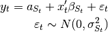

statsmodels.tsa.regime_switching.markov_regression.MarkovRegression¶
-
class
statsmodels.tsa.regime_switching.markov_regression.MarkovRegression(endog, k_regimes, trend='c', exog=None, order=0, exog_tvtp=None, switching_trend=True, switching_exog=True, switching_variance=False, dates=None, freq=None, missing='none')[source]¶ First-order k-regime Markov switching regression model
Parameters: endog : array_like
The endogenous variable.
k_regimes : integer
The number of regimes.
trend : {‘nc’, ‘c’, ‘t’, ‘ct’}
Whether or not to include a trend. To include an intercept, time trend, or both, set trend=’c’, trend=’t’, or trend=’ct’. For no trend, set trend=’nc’. Default is an intercept.
exog : array_like, optional
Array of exogenous regressors, shaped nobs x k.
order : integer, optional
The order of the model describes the dependence of the likelihood on previous regimes. This depends on the model in question and should be set appropriately by subclasses.
exog_tvtp : array_like, optional
Array of exogenous or lagged variables to use in calculating time-varying transition probabilities (TVTP). TVTP is only used if this variable is provided. If an intercept is desired, a column of ones must be explicitly included in this array.
switching_trend : boolean or iterable, optional
If a boolean, sets whether or not all trend coefficients are switching across regimes. If an iterable, should be of length equal to the number of trend variables, where each element is a boolean describing whether the corresponding coefficient is switching. Default is True.
switching_exog : boolean or iterable, optional
If a boolean, sets whether or not all regression coefficients are switching across regimes. If an iterable, should be of length equal to the number of exogenous variables, where each element is a boolean describing whether the corresponding coefficient is switching. Default is True.
switching_variance : boolean, optional
Whether or not there is regime-specific heteroskedasticity, i.e. whether or not the error term has a switching variance. Default is False.
Notes
This model is new and API stability is not guaranteed, although changes will be made in a backwards compatible way if possible.
The model can be written as:

i.e. the model is a dynamic linear regression where the coefficients and the variance of the error term may be switching across regimes.
The trend is accomodated by prepending columns to the exog array. Thus if trend=’c’, the passed exog array should not already have a column of ones.
References
Kim, Chang-Jin, and Charles R. Nelson. 1999. “State-Space Models with Regime Switching: Classical and Gibbs-Sampling Approaches with Applications”. MIT Press Books. The MIT Press.
Attributes
endog_namesNames of endogenous variables exog_namesk_params(int) Number of parameters in the model param_names(list of str) List of human readable parameter names (for parameters start_params(array) Starting parameters for maximum likelihood estimation. Methods
filter(*args, **kwargs)Apply the Hamilton filter fit([start_params, transformed, cov_type, ...])Fits the model by maximum likelihood via Hamilton filter. from_formula(formula, data[, subset, drop_cols])Create a Model from a formula and dataframe. hessian(params[, transformed])Hessian matrix of the likelihood function, evaluated at the given information(params)Fisher information matrix of model initial_probabilities(params[, ...])Retrieve initial probabilities initialize()Initialize (possibly re-initialize) a Model instance. initialize_known(probabilities[, tol])Set initialization of regime probabilities to use known values initialize_steady_state()Set initialization of regime probabilities to be steady-state values loglike(params[, transformed])Loglikelihood evaluation loglikeobs(params[, transformed])Loglikelihood evaluation for each period predict(params[, start, end, probabilities, ...])In-sample prediction and out-of-sample forecasting predict_conditional(params)In-sample prediction, conditional on the current regime regime_transition_matrix(params[, exog_tvtp])Construct the left-stochastic transition matrix score(params[, transformed])Compute the score function at params. score_obs(params[, transformed])Compute the score per observation, evaluated at params smooth(*args, **kwargs)Apply the Kim smoother and Hamilton filter transform_params(unconstrained)Transform unconstrained parameters used by the optimizer to constrained untransform_params(constrained)Transform constrained parameters used in likelihood evaluation Methods
filter(*args, **kwargs)Apply the Hamilton filter fit([start_params, transformed, cov_type, ...])Fits the model by maximum likelihood via Hamilton filter. from_formula(formula, data[, subset, drop_cols])Create a Model from a formula and dataframe. hessian(params[, transformed])Hessian matrix of the likelihood function, evaluated at the given information(params)Fisher information matrix of model initial_probabilities(params[, ...])Retrieve initial probabilities initialize()Initialize (possibly re-initialize) a Model instance. initialize_known(probabilities[, tol])Set initialization of regime probabilities to use known values initialize_steady_state()Set initialization of regime probabilities to be steady-state values loglike(params[, transformed])Loglikelihood evaluation loglikeobs(params[, transformed])Loglikelihood evaluation for each period predict(params[, start, end, probabilities, ...])In-sample prediction and out-of-sample forecasting predict_conditional(params)In-sample prediction, conditional on the current regime regime_transition_matrix(params[, exog_tvtp])Construct the left-stochastic transition matrix score(params[, transformed])Compute the score function at params. score_obs(params[, transformed])Compute the score per observation, evaluated at params smooth(*args, **kwargs)Apply the Kim smoother and Hamilton filter transform_params(unconstrained)Transform unconstrained parameters used by the optimizer to constrained untransform_params(constrained)Transform constrained parameters used in likelihood evaluation Attributes
endog_namesNames of endogenous variables exog_namesk_params(int) Number of parameters in the model param_names(list of str) List of human readable parameter names (for parameters start_params(array) Starting parameters for maximum likelihood estimation.